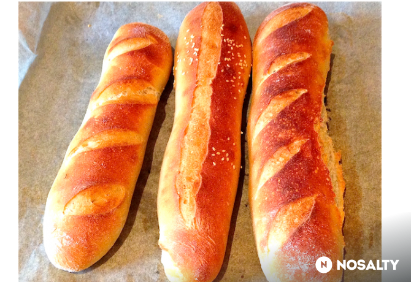

Francia bagett házilag
Vissza
Forrás

Story
Mindenki szereti a jó kenyeret, de egyre kevesebb helyen kapni jót. Ami meg ténylegesen jó pékség, az aranyárban méri a jó kenyeret. Ez a recept segíteni fog azoknak, akik szeretik a friss, jó minőségű kenyeret, és persze van türelmük kivárni a 20 órás pihentetési időt... :D
Hozzávalók
- 400 g finomliszt
- 25 g finomliszt
- 3 dl víz
- 6 g instant élesztő
- 8 g só
Elkészítés
- Keverőgépbe vagy konyhai robot edényébe öntsük bele a vizet, majd a többi alapanyaggal összekevert lisztet. Ha gondoljuk, a lisztet át is lehet szitálni, úgy levegősebb lesz. Dagasszuk a tésztát negyedórán keresztül, majd formázzunk cipót, és kelesszük 1 órán keresztül szobahőmérsékleten.
- Az egy óra leteltével tenyerünkkel kissé nyújtsuk el a tésztát, négy oldalát hajtsuk befelé, újból formázzunk cipót belőle, majd tegyük fóliával letakart műanyag edénybe a hűtőbe 14-20 órára pihenni.
- A pihenő idő elteltével tegyük a tésztát lisztezett deszkára, tetejét kissé szórjuk meg liszttel, és osszuk három egyenlő részre. Tenyerünkkel kissé lapítsuk el a tésztát, majd a velünk szemben lévő vízszintes felső szélét hajtsuk magunk felé a tészta közepéig, illetve az alsó szélét szintén középre. Kissé sodorjuk meg. Ugyanígy járjunk el az összes tésztával, majd pihentessük szobahőmérsékleten egy óra hosszát. A tésztákat takarjuk le nedves konyharuhával.
- Formázzuk meg a bagetteket: tenyerünkkel kissé lapítsuk el, majd felső szélét hajtsuk be a közepéig, és jól nyomkodjuk le a szélét, mintha borítékot zárnánk, majd hajtsuk az alsó szélére a tésztát, megint csak lezárva a szélét. Lisztezett deszkán tenyerünkkel sodorjuk meg a sütőlemez hosszának megfelelően. Sütőpapírral bélelt sütőlemezre fektessük a bagetteket, majd 1 óra pihenő következik, újból takarjuk le nedves konyharuhával.
- Sütés előtt a bagettek tetejére szitáljunk kevés lisztet, majd pengével vagdossuk be. A sütést megelőzően tegyünk egy kisebb, üres sütőlemezt a sütő alsó részére. Erre azért lesz szükség, mert a gőzt jégkockákkal fogjuk előidézni, amit erre a lemezre dobunk majd rá, amikor a bagettek bekerülnek a sütőbe.
- A sütőt melegítsük elő 260 fokra, tegyük be a bagetteket, dobjuk be a jégkockákat, és azonnal zárjuk a sütőajtót. Kb. 15 perc alatt süssük készre. Ha megsültek a kenyerek, tegyük őket rácsra, hogy ne vizesedjenek át.
| Beküldve |
2014.02.12 |
| Tegnapi nézettség |
5 |
| Össznézettség |
49803 |
| Elküldve |
6 |
| Receptkönyvben |
131 |
| Elkészítve |
6/6 |
| Facebookon megjelent |
- |